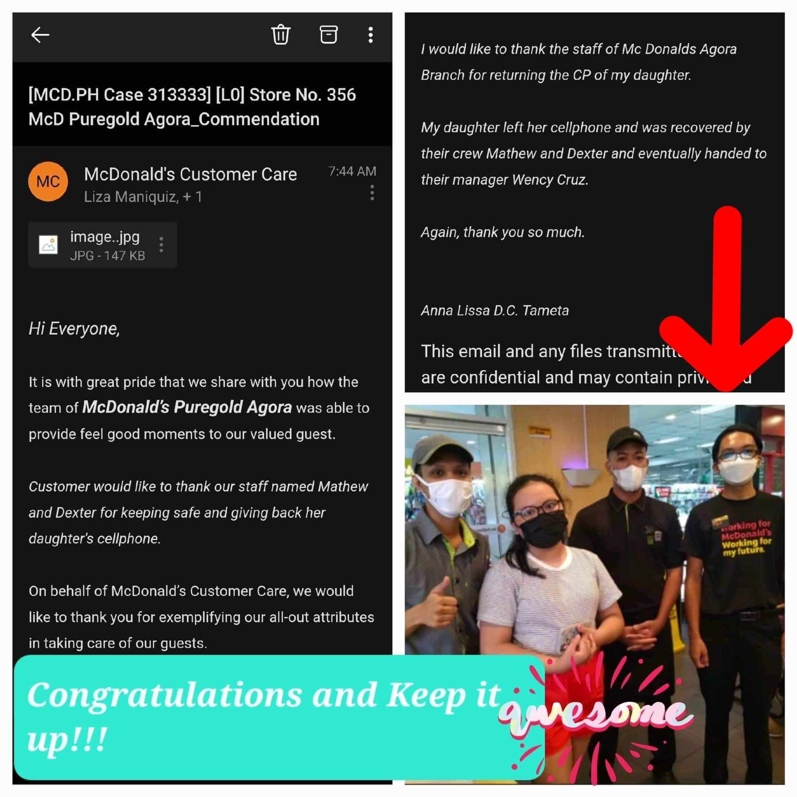

Background
As a computer engineering student, avid gamer, and passionate cyclist, my background reflects a dynamic blend of technical proficiency, strategic thinking, and an adventurous spirit. In the academic realm, pursuing a degree in computer engineering has equipped me with a solid foundation in programming languages, software development, and hardware design. This academic journey has honed my problem-solving skills, fostering an analytical mindset and the ability to navigate complex systems. Simultaneously, my passion for gaming has cultivated strategic thinking, decision-making prowess, and an adeptness at adapting to new technologies. Engaging in virtual communities has strengthened my teamwork and leadership capabilities. Beyond the digital realm, my love for cycling speaks to an adventurous spirit and a commitment to a healthy, active lifestyle. Riding a bike not only provides an excellent outlet for stress relief but also imparts a mechanical understanding that aligns with problem-solving skills crucial in both engineering and gaming. This diverse combination of experiences not only underscores my technical acumen as a computer engineer but also highlights my adaptability, creativity, and the ability to thrive in multifaceted environments.
About Me
Welcome to my personal website! I'm Matthew. Here, you'll get to know more about me and my journey.
Skills
My technical skills include proficiency in HTML, CSS, JavaScript, and various front-end and back-end frameworks. I also have experience with database management using SQL and NoSQL technologies.
Resume

Education
School Name: Politechnical University Of The Philippines (College)
Present: 2022-Present
School Name: Eulogio "Amang" Rodriguez Vocational HighSchool(Senior HighSchool)
Graduated: 2020-2022
School Name: Central Colleges Of the Philippines (HighSchool)
Graduated: 2016-2020
School Name: Salapan Elementary School (Elementary)
Graduated: 2011-2016
School Name: Immaculate Heart Mary College (Nursery)
Graduated: 2007-2011
Work Experience
MCDONALD'S - Service Crew
Employment Period: Sept 2022 - Nov 2022
Skills
- Programming Languages: JavaScript, HTML, CSS, etc.
- Database Management: MongoDB, MySQL, etc.
Contact
Feel free to reach out to me. You can use the form below or connect through my social media.